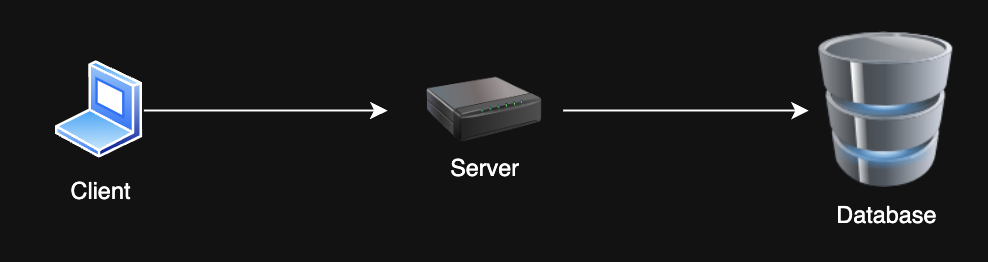
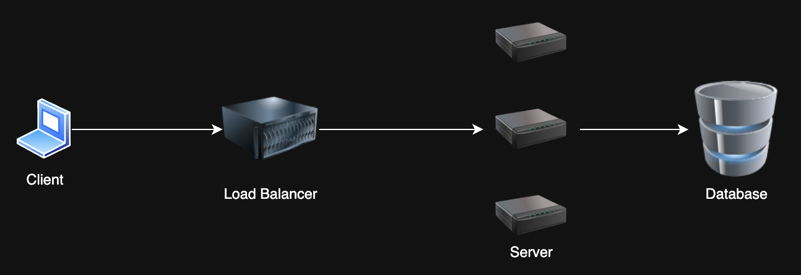
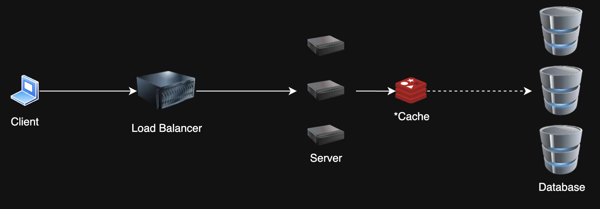
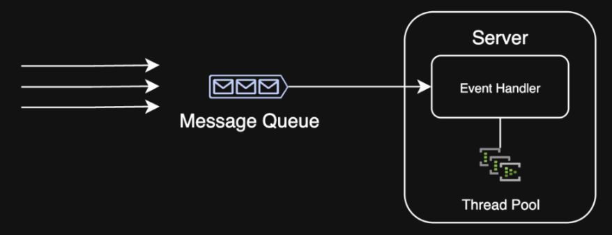
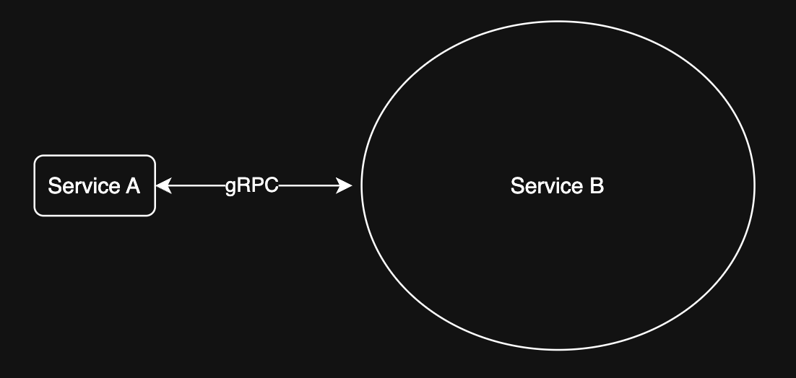
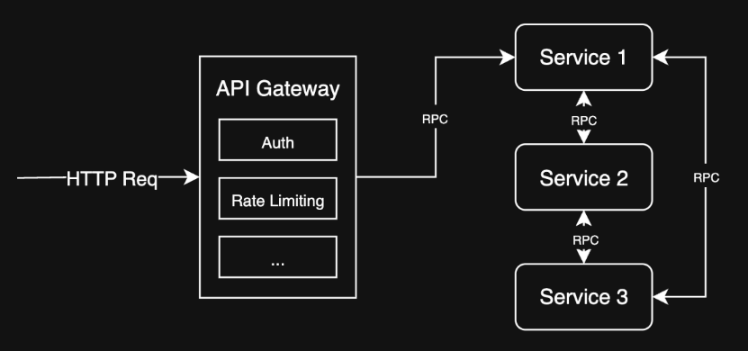
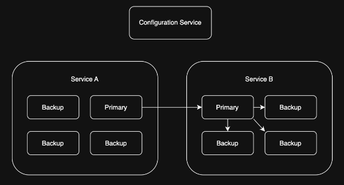
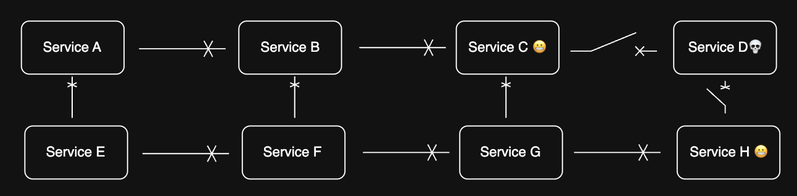

System Design
Patterns for Scalability and Reliability in Systems
Agenda
- Client Server Architecture
- Scalability Patterns
- Limitations
- Extending Client Server Architecture
- Availability/Reliability Patterns
- Conclusion
Client Server Architecture
- Client-server architecture
- RESTful API
- Stateful vs. stateless services

Scalability Patterns
1. Load Balancing
Problem: I have too many requests! My single server can't take it anymore 😭
Solution: Horizontal scaling with a load balancer -- distribute requests across multiple servers

Scalability Patterns
2. Caching
Problem: My database is slow and can't handle all these reads 😩
Solution: Cache frequently/recently accessed data to reduce database load

Scalability Patterns
3. Database Sharding/Partitioning
Problem: My database is massive and can't handle all these writes 😭
Solution: Split the database into smaller, more manageable pieces. Designate a partition key to determine which shard to write to.

Scalability Patterns
3. Queueing
Problem: My system is overwhelmed by bursty traffic and can't process requests fast enough 😩
Solution: Use a message queue to manage requests and process them asynchronously

Limitations
SQL Databases
Problem: SQL databases have limitations on scalability due to ACID properties 😞
- 1,000 writes/sec - Use more than one instance (sharding)
- 10,000 reads/sec - Use read replicas
- 1 TB (1000 GB) - Use partitioning
- 100 million records - Standard B-tree indexing not as effective
Solution: Add replicas, shard, or use a different database
Limitations
NoSQL Databases
- Many NoSQL databases scale horizontally and efficiently by default 🥳
- Tradeoff ACID and indexing capabilities for effectively unlimited scalability with the right schema design
- E.g. Cassandra, MongoDB, DynamoDB
Limitations
Networks
Problem: At scale, network latency and throughput can become a bottleneck 😱
- 50 ms - Good latency over the internet
- 10 ms - Good latency within a data center
- 1 Gbps - Start thinking about multiple servers (or just network interfaces)
Solution: Add more servers and route network traffic, use CDNs/edge caching
Limitations
Single Hosts
Problem: Single hosts have limitations on CPU, memory, and disk I/O 😡
- 100 GB working set of data in memory - Consider sharding or partitioning
- 1 GB data to cache - Consider using a distributed cache
- 10,000 requests/sec - Consider adding more servers
Solution: Partition for write-heavy workloads, cache data upstream for read-heavy workloads to decrease requests
Service-Oriented Architecture (SOA)
Problem: My monolithic architecture is hard to maintain and scale 😖
Solution: Break down the monolith into smaller, more manageable services. Each service is responsible for a specific task and can be scaled independently.

Extending Client Server Architecture
API Gateway
Problem: I have multiple services which are non-uniform, and clients need to access them all 😩
Solution: Use an API Gateway to route requests to the appropriate service

Availability/Reliability Background
- Availability: System is operational and accessible
- Reliability: System performs as expected under normal conditions
Why do we need a reliable system?
- 99.999% uptime = 5.26 minutes of downtime per year
- With 100 services, each with 99.999% uptime, the system could be down for 8.76 hours per year (assuming everything is a single point of failure)
To put it into perspective, AWS EC2's Service Level Agreement is 99.99% uptime, which allows for 52.56 minutes of downtime per year
So building on top of cloud services still requires going the extra mile to ensure reliability
Reliability Patterns
1. Replication
Problem: I have a stateful, purpose-built service that needs to be highly available 😅
Solution: Primary forwards writes to replicas, which can take over if the primary fails

Reliability Patterns
2. Circuit Breaker
- Prevents system failures from cascading
- Monitors and isolates failing components

Reliability Patterns
3. Graceful Degradation
Design systems to maintain (at least) partial functionality during failures - If a service is down, show cached data - If a service is overloaded, timeout gracefully and retry later
Limit hard dependencies and keep services decoupled